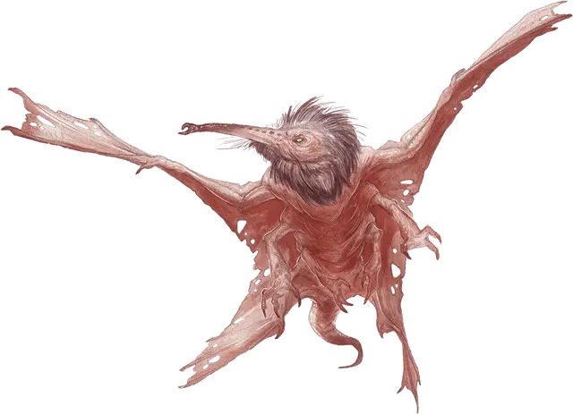

Кровопийца
Stirge
Крошечный Зверь, без мировоззрения

Класс Доспеха 14 (природный доспех)
Хиты 2 (1к4)
Скорость 10 футов, летая 40 футов
| мод | спас | ||
|---|---|---|---|
| СИЛ | 4 | −3 | −3 |
| ЛОВ | 16 | +3 | +3 |
| ТЕЛ | 11 | +0 | +0 |
| мод | спас | ||
|---|---|---|---|
| ИНТ | 2 | −4 | −4 |
| МДР | 8 | −1 | −1 |
| ХАР | 6 | −2 | −2 |
Чувства тёмное зрение 60 футов, пассивное Восприятие 9
Опасность 1/8 (25 опыта)
Бонус мастерства +2
Среда обитания Болото, Город, Горы, Лес, Луг, Побережье, Подземье, Пустыня, Холмы
Действия
Высасывание крови. Рукопашная атака оружием: +5 к попаданию, досягаемость 5 футов, одно существо. Попадание: Колющий урон 5 (1к4 + 3), и кровопийца прикрепляется к цели. Пока кровопийца прикреплен, он не совершает атаки. Вместо этого в начале каждого следующего хода кровопийцы цель теряет 5 (1к4 + 3) хитов из-за потери крови.
Кровопийца может отцепиться, потратив 5 футов перемещения. Он делает это после того, как выпивает на 10 хитов крови из цели или если цель умирает. Любое существо, в том числе цель, может действием оторвать кровопийцу.
Описание
Это ужасное летающее существо выглядит как нечто среднее между крупной летучей мышью и гигантским комаром. Его ноги заканчиваются острыми клешнями, а длинный, похожий на иглу хоботок разрезает воздух в поисках пищи.
Кровопийцы питаются кровью живых существ, присасываясь и иссушая их очень медленно. Несмотря на то, что они не представляют большой опасности в небольших группах, целая стая кровопийц может быть страшной угрозой, перепрыгивая с одной цели на другую, тем самым ослабляя их.
Кровосос. Кровопийцы находят уязвимые места на теле жертвы, плотно закрепляются на ней при помощи сильных лап-клещей, а при помощи хоботка прокусывают тело жертвы. Как только кровопийца насыщается, он открепляется от тела и улетает прочь переваривать пищу.